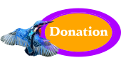
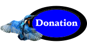
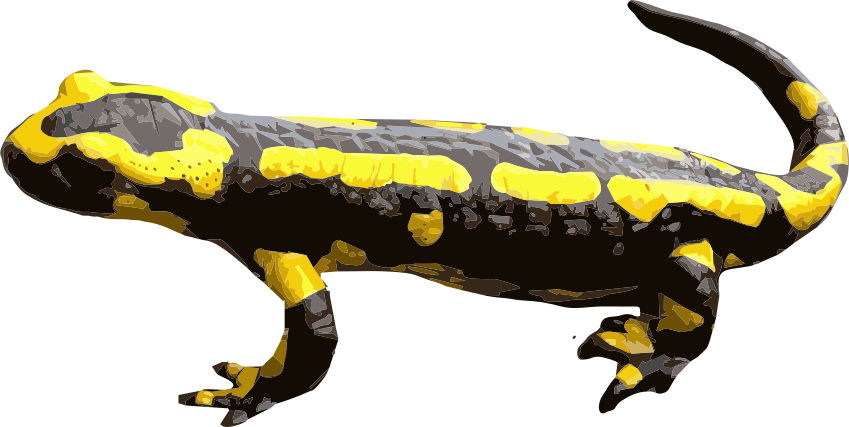
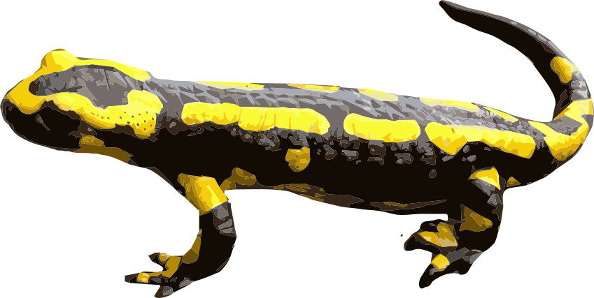

 

La salamandre commune ou tachetée (Salamandra salamandra) est un petit animal qui fait partie de la famille des amphibiens, c'est elle que nous rencontrons parfois dans nos jardins. On la retrouve également sculptée sur beaucoup de monuments historiques puisque François 1er en avait fait un emblème royal !
Longue d'une vingtaine de centimètre, la salamandre a une peau noire, luisante, avec des taches jaunes. Sa peau fait office d'appareil respiratoire, en quelque sorte, et a besoin d'un environnement humide. Des mues de la peau se produisent régulièrement. Avec ses grands yeux noirs, la salamandre jouit d'une vue excellente, notamment la nuit, puisqu'il s'agit d'un animal sortant essentiellement la nuit. Par contre, elle n'a pas d'oreilles, ne coasse pas, elle peut uniquement émettre des petits sons en cas de frayeur. Une autre caractéristique de la salamandre est qu'elle ne nage pas !
Accueil